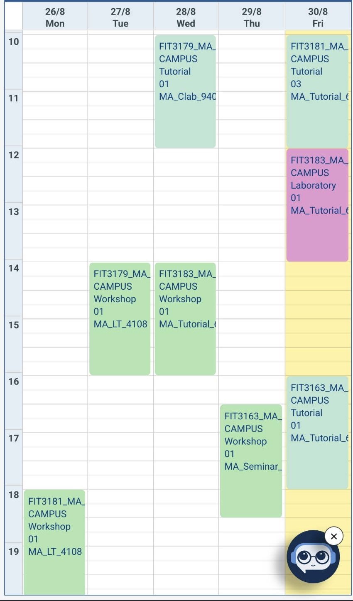

時間割の説明 (「通常学期」と「忙しい学期」の比較)
1科目につき週4時間の授業があります。授業の他に予習や復習にも時間を割く必要があります。
<1科目にかかる時間の目安>
・(予習: 3h/ 週 (土日に行う))
・授業: 4h (科目によって2h)/ 週
・(復習:1h/ 週 (勤務時間外の夜に行う))
・宿題の時間など (3週間〜4週間に一つ):+α /h
*下のスケジュール表は【授業】だけの時間を表しています。
*学期ごとに履修科目数が異なるため、今学期と一番忙しい学期の比較をしています。
*時差: 時刻表示はマレーシア時間なので日本時間で考えるには【+1時間】してください。

⚫️通常学期 (3科目履修/最大4科目)
・(予習: 2h× 3科目 = 6h/週 (土日に行う))
・授業: 4h× 3科目 = 12h/週
・(復習: 1h× 3科目 = 3h/週(19:00以降に行う))
例:
月曜日: 10:00-12:00, 15:00-18:00 計: 5時間
火曜日: 13:00-18:00 計: 5時間
水曜日: 9:00-11:00, 13:00-17:00 計: 7時間
木曜日: 9:00-11:00, 14:30-16:00 計: 4時間半
金曜日: なし
<まとめ>
合計【21時間程度】の勤務時間が確保できます。
これが通常学期の忙しさの場合の目安ですが、最悪のケースも考え、下に「一番忙しい学期」についてもまとめました。

例:
月曜日: 9:00-13:00, 14:00-16:00 計: 6時間
火曜日: 9:00-13:00, 16:30-17:30 計: 5時間
水曜日: 8:00-9:30, 12:30-13:30, 16:30-18:00 計: 4時間/なし
*授業がオンラインの場合は最低４時間確保できそうだが、対面の場合はギリギリ？
木曜日: 9:00-13:00, 14:00-16:00 計: 6時間
金曜日: なし
<まとめ>
合計【週17〜21時間程度】の勤務時間が確保できます。
あくまで一番忙しい学期の場合なので、選択科目を工夫することで、より勤務時間を確保しやすくなります。
⚫️一番忙しい学期(4科目履修/最大4科目)
・(予習: 2h× 4科目 = 8h/週 (土日に行う))
・授業: 4h× 4科目 = 16h/週
・(復習: 1h× 4科目 = 4h/週(19:00以降に行う))
例:
月曜日: 9:00-13:00, 14:00-16:00 計: 6時間
火曜日: 9:00-13:00, 16:30-17:30 計: 5時間
水曜日: 8:00-9:30, 12:30-13:30, 16:30-18:00 計: 4時間/なし
*授業がオンラインの場合は最低４時間確保できそうだが、対面の場合はギリギリ？
木曜日: 9:00-13:00, 14:00-16:00 計: 6時間
金曜日: なし
<まとめ>
合計【週17〜21時間程度】の勤務時間が確保できます。
あくまで一番忙しい学期の場合なので、選択科目を工夫することで、より勤務時間を確保しやすくなります。